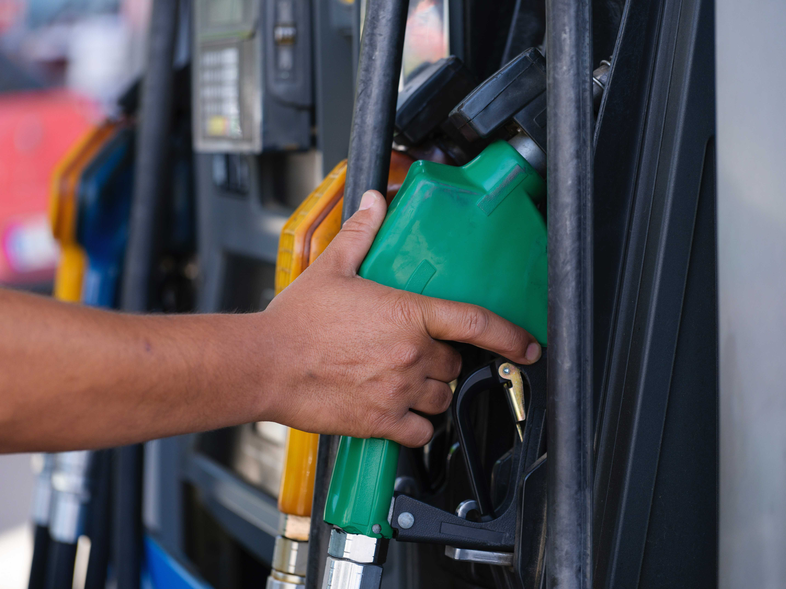

by Vineet Sachdev

Energy price has been on a boil this year. Brent crude (the global benchmark for petroleum prices) has increased by around 30% since the beginning of the year and hovering around $100 per barrel till August 6. Earlier, in March this year crude price had croosed $130 due to the geopolitical tensions created because of the Russian invasion of Ukraine. This sudden spike in crude oil price has created crisis for smaller and middle-income countries that are largely dependent on imports.
In last few months protests against local fuel price hikes have erupted in India’s neighbouring countries - Sri Lanka, Pakistan and recently in Bangladesh. In India, under pressure from opposition parties the central governmentt had cut down its taxes in May. Similar cut in taxes were also followed by some of the state governments. We look at the fuel price data that is available on a daily basis for different states and districts (within states) in India to understand how fuel price differ across regions and why this matters.
While the fuel price structure for all cities in India is not present in public domain, price break-up data for India’s capital Delhi is available. The retail price breakup of per litre petrol (gasoline) in Delhi shows that it comprises of – the base price that is charged to fuel dealers by the oil company which also includes the cost of freight in it, commission of dealers as well as tax collected by government- both the central and state on each litre of fuel. While the central tax amount is fixed, local state tax in Delhi is based on the percentage of base fuel price plus the dealer’s commission and central taxes. In percentage terms the base price which the oil company charges the dealer comprises only 60% of retail selling price of petrol in Delhi while 38 percent is the tax component. See the graphic below
The above price breakup information shows that retail prices differ across states mainly because of the structure of local state government taxes which is not fixed. Each state is further divided into districts. Retail price information for a single day for each of the 738 districts in India is available in public domain. An analysis of this data (for August 6) shows that fuel price also varies within different districts in the state. This could be mainly due to the local freight cost involved in transportation as well as dealer commission.
The graphic below depicts the states which have the highest fuel price in India as well as the states that have the highest variation in retail prices within them. Only larger states that have a population of over 50 million as per the last census in 2011 have been taken.
Graphic 1:-
Graphic 2:-
India’s inflation rate as per the latest release for June 2022 was 7.01%. Since the beginning of the year the inflation rate has stayed above the Central bank’s target range of 4-6%. This increase is largely driven due to increase in fuel prices While fuel and light subcomponent comprise only 8% of India’s inflation index, it has seen highest inflation of around 10% for the past three months.
Due to different tax structures across states, there is considerable difference in retail fuel prices as seen in the graphic above. While there have been demands to bring state taxes under a single structure in the past, nothing has fructified since local taxes on fuel are one of the major sources of revenue for state governments. This results in more economic hardships for lower- and middle-income people in states with higher tax rates during the current period of high inflation and stagnating economic growth.
Disclaimer:- Story done as part of Lede course program